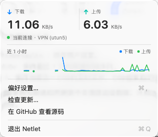
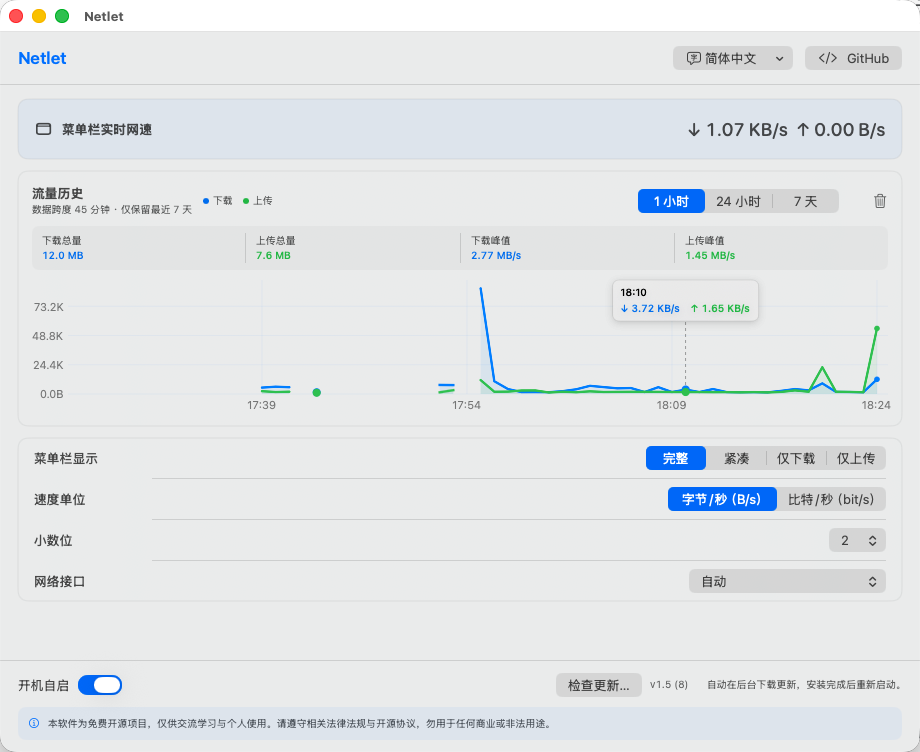

01
下载与上传，每秒可见
直接留在菜单栏，不需要打开窗口。完整、紧凑、仅下载、仅上传四种显示方式，按你的桌面空间选择。
macOS 菜单栏实时网速
在菜单栏直接查看上传与下载速度，随手回看最近 1 小时趋势；主界面保留最近 7 天历史。简单、轻量、完全本地运行。

Less noise, more signal
Netlet 不分析流量内容，也不堆叠无关功能。实时速度、历史趋势和筛选统计，都来自当前 Mac 的本地流量记录。
直接留在菜单栏，不需要打开窗口。完整、紧凑、仅下载、仅上传四种显示方式，按你的桌面空间选择。
支持字节/秒与比特/秒，并自动在 B、KB、MB 或 bit、Kbit、Mbit 之间换算。切换迟滞避免临界网速下反复跳动。
自动识别正在使用的 Wi‑Fi、以太网或 VPN 接口；需要时也可以在偏好设置中手动指定。
切换 1 小时、24 小时或 7 天后，总流量、峰值与曲线会同步更新。把鼠标放到曲线上，还能读取最近一分钟的下载与上传速度。
Native for macOS
原生 SwiftUI 界面，把实时速度、历史趋势和显示设置放在一个窗口里。调整单位、样式或网络接口后，变化立即同步到菜单栏。

安装指南
Netlet 暂无 Apple Developer ID 证书，因此首次打开需要在系统设置中手动允许。这是免费开源项目当前的分发方式，不影响软件在本机运行。
下载适用于 Apple Silicon 的 Netlet v1.5。
打开 DMG，将 Netlet 拖到“应用程序”文件夹。
若被系统阻止，在“隐私与安全性”中点击“仍要打开”。
Local first
Netlet 只读取 macOS 提供的网络接口累计字节数，并在本机计算速度。按分钟聚合的历史数据只在本机保留最近 7 天；它不检查网络内容，不需要账户，也不收集或上传任何数据。
只有在你检查软件更新时，应用才会连接 GitHub Releases。